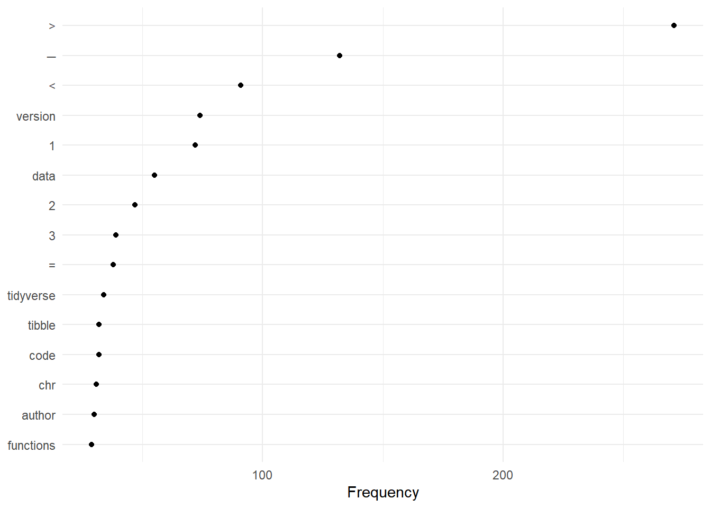
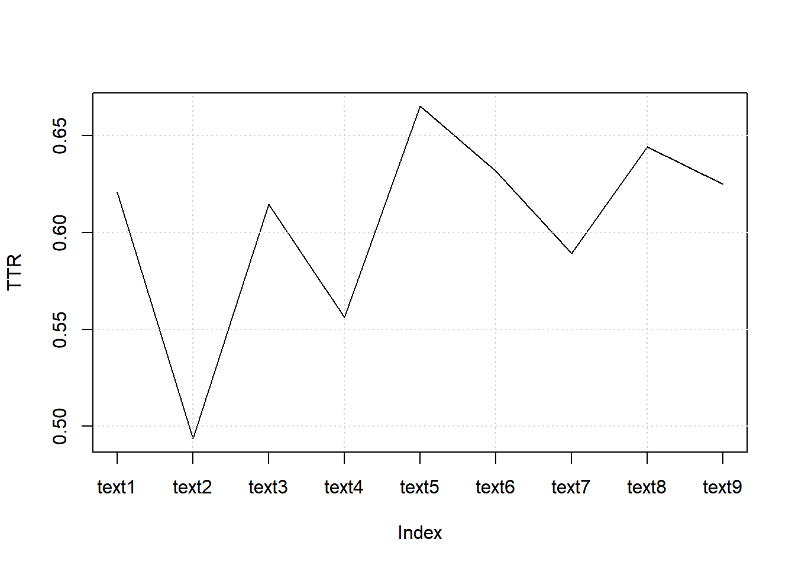
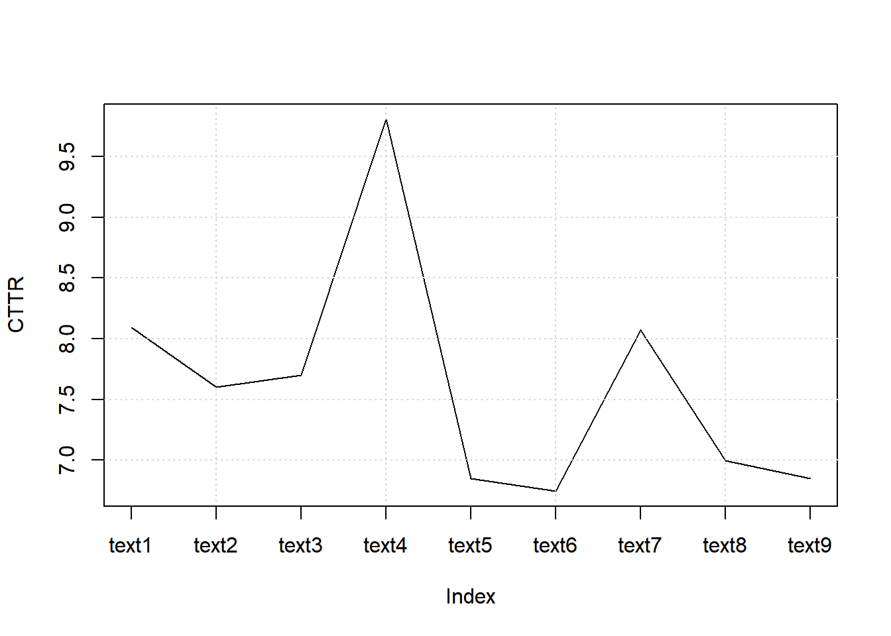
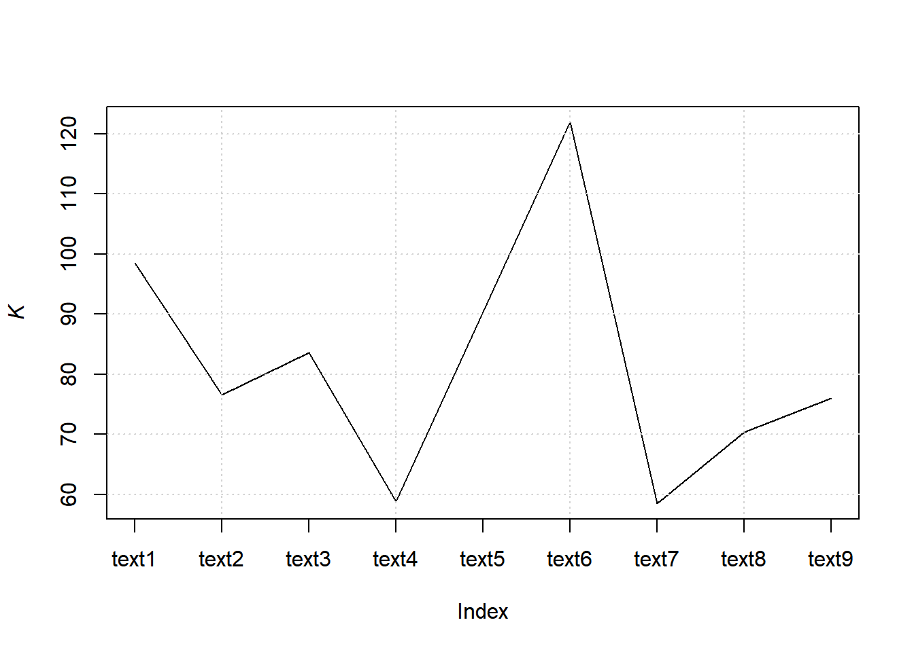
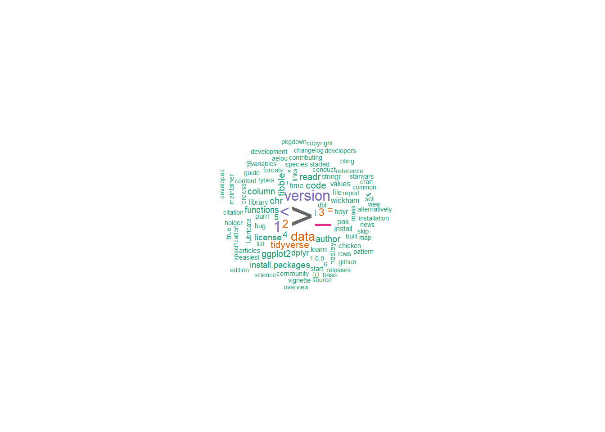
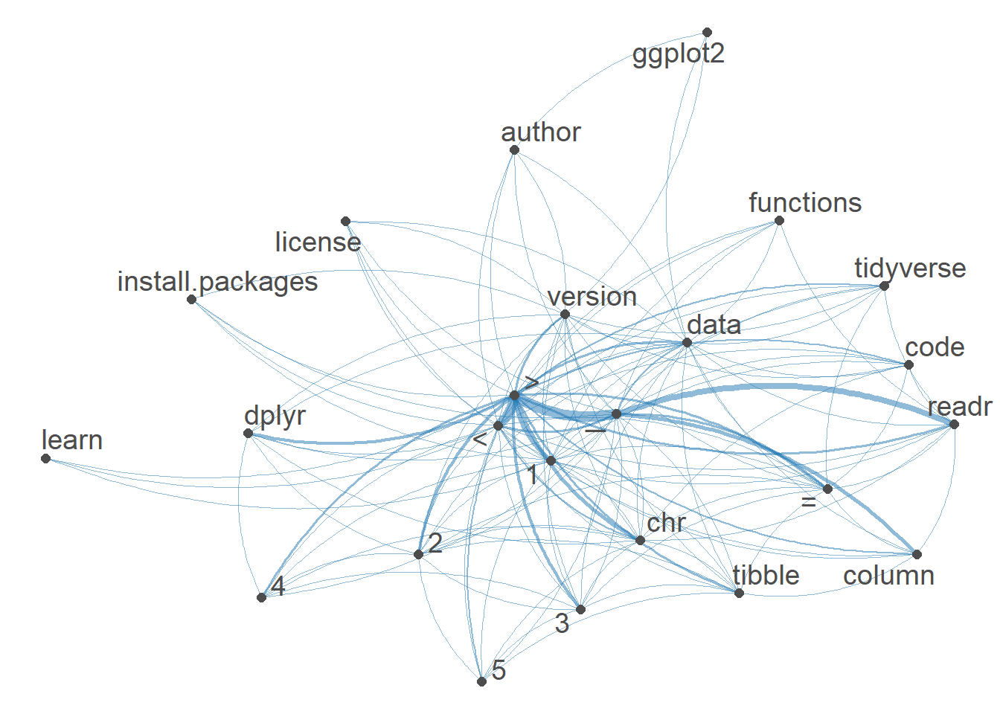

6.8 Multiple webpages
6.8.1 Read_html
## {html_document}
## <html>
## [1] <head>\n<meta http-equiv="Content-Type" content="text/html; charset=UTF-8 ...
## [2] <body>\n <div id="appTidyverseSite" class="shrinkHeader alwaysShrinkHead ...## {xml_nodeset (9)}
## [1] <a href="https://ggplot2.tidyverse.org/" target="_blank">\n <img class ...
## [2] <a href="https://dplyr.tidyverse.org/" target="_blank">\n <img class=" ...
## [3] <a href="https://tidyr.tidyverse.org/" target="_blank">\n <img class=" ...
## [4] <a href="https://readr.tidyverse.org/" target="_blank">\n <img class=" ...
## [5] <a href="https://purrr.tidyverse.org/" target="_blank">\n <img class=" ...
## [6] <a href="https://tibble.tidyverse.org/" target="_blank">\n <img class= ...
## [7] <a href="https://stringr.tidyverse.org/" target="_blank">\n <img class ...
## [8] <a href="https://forcats.tidyverse.org/" target="_blank">\n <img class ...
## [9] <a href="https://lubridate.tidyverse.org/" target="_blank">\n <img cla ...6.8.2 Extract headline
## [1] "https://ggplot2.tidyverse.org/" "https://dplyr.tidyverse.org/"
## [3] "https://tidyr.tidyverse.org/" "https://readr.tidyverse.org/"
## [5] "https://purrr.tidyverse.org/" "https://tibble.tidyverse.org/"
## [7] "https://stringr.tidyverse.org/" "https://forcats.tidyverse.org/"
## [9] "https://lubridate.tidyverse.org/"6.8.3 Extract subpages
## [[1]]
## {html_document}
## <html lang="en">
## [1] <head>\n<meta http-equiv="Content-Type" content="text/html; charset=UTF-8 ...
## [2] <body>\n <a href="#container" class="visually-hidden-focusable">Skip t ...
##
## [[2]]
## {html_document}
## <html lang="en">
## [1] <head>\n<meta http-equiv="Content-Type" content="text/html; charset=UTF-8 ...
## [2] <body>\n <a href="#container" class="visually-hidden-focusable">Skip t ...
##
## [[3]]
## {html_document}
## <html lang="en">
## [1] <head>\n<meta http-equiv="Content-Type" content="text/html; charset=UTF-8 ...
## [2] <body>\n <a href="#container" class="visually-hidden-focusable">Skip t ...
##
## [[4]]
## {html_document}
## <html lang="en">
## [1] <head>\n<meta http-equiv="Content-Type" content="text/html; charset=UTF-8 ...
## [2] <body>\n <a href="#container" class="visually-hidden-focusable">Skip t ...
##
## [[5]]
## {html_document}
## <html lang="en">
## [1] <head>\n<meta http-equiv="Content-Type" content="text/html; charset=UTF-8 ...
## [2] <body>\n <a href="#container" class="visually-hidden-focusable">Skip t ...
##
## [[6]]
## {html_document}
## <html lang="en">
## [1] <head>\n<meta http-equiv="Content-Type" content="text/html; charset=UTF-8 ...
## [2] <body>\n <a href="#container" class="visually-hidden-focusable">Skip t ...
##
## [[7]]
## {html_document}
## <html lang="en">
## [1] <head>\n<meta http-equiv="Content-Type" content="text/html; charset=UTF-8 ...
## [2] <body>\n <a href="#container" class="visually-hidden-focusable">Skip t ...
##
## [[8]]
## {html_document}
## <html lang="en">
## [1] <head>\n<meta http-equiv="Content-Type" content="text/html; charset=UTF-8 ...
## [2] <body>\n <a href="#container" class="visually-hidden-focusable">Skip t ...
##
## [[9]]
## {html_document}
## <html lang="en">
## [1] <head>\n<meta http-equiv="Content-Type" content="text/html; charset=UTF-8 ...
## [2] <body>\n <a href="#container" class="visually-hidden-focusable">Skip t ...The structure seems to be similar across all pages
## [1] "ggplot2" "dplyr" "tidyr" "readr" "purrr" "tibble"
## [7] "stringr" "forcats" "lubridate"and extracting version number
pages %>%
map(rvest::html_element, css = "small.nav-text.text-muted.me-auto") %>%
map_chr(rvest::html_text)## [1] "4.0.0" "1.1.4" "1.3.1" "2.1.5" "1.1.0" "3.3.0" "1.5.1" "1.0.0" "1.9.4"and we can also add all into a tibble
6.8.4 Extract text
pages_table <- tibble(
name = pages %>%
map(rvest::html_element, css = "a.navbar-brand") %>%
map_chr(rvest::html_text),
version = pages %>%
map(rvest::html_element, css = "small.nav-text.text-muted.me-auto") %>%
map_chr(rvest::html_text),
CRAN = pages %>%
map(rvest::html_element, css = "ul.list-unstyled > li:nth-child(1) > a") %>%
map_chr(rvest::html_attr, name = "href"),
Learn = pages %>%
map(rvest::html_element, css = "ul.list-unstyled > li:nth-child(4) > a") %>%
map_chr(rvest::html_attr, name = "href"),
text = pages %>%
map(rvest::html_element, css = "body") %>%
map_chr(rvest::html_text2)
)
pages_table## # A tibble: 9 × 5
## name version CRAN Learn text
## <chr> <chr> <chr> <chr> <chr>
## 1 ggplot2 4.0.0 https://cloud.r-project.org/package=ggplot2 https:/… "Ski…
## 2 dplyr 1.1.4 https://cloud.r-project.org/package=dplyr http://… "Ski…
## 3 tidyr 1.3.1 https://cloud.r-project.org/package=tidyr https:/… "Ski…
## 4 readr 2.1.5 https://cloud.r-project.org/package=readr http://… "Ski…
## 5 purrr 1.1.0 https://cloud.r-project.org/package=purrr http://… "Ski…
## 6 tibble 3.3.0 https://cloud.r-project.org/package=tibble https:/… "Ski…
## 7 stringr 1.5.1 https://cloud.r-project.org/package=stringr http://… "Ski…
## 8 forcats 1.0.0 https://cloud.r-project.org/package=forcats http://… "Ski…
## 9 lubridate 1.9.4 https://cloud.r-project.org/package=lubridate https:/… "Ski…6.8.5 Create a corpus
## Corpus consisting of 9 documents and 4 docvars.
## text1 :
## "Skip to content ggplot24.0.0 Get started Reference News Rele..."
##
## text2 :
## "Skip to content dplyr1.1.4 Get started Reference Articles Gr..."
##
## text3 :
## "Skip to content tidyr1.3.1 Tidy data Reference Articles Pivo..."
##
## text4 :
## "Skip to content readr2.1.5 Get started Reference Articles Co..."
##
## text5 :
## "Skip to content purrr1.1.0 Reference Articles purrr <-> base..."
##
## text6 :
## "Skip to content tibble3.3.0 Get started Reference Articles C..."
##
## [ reached max_ndoc ... 3 more documents ]6.8.5.1 Summary
## Corpus consisting of 9 documents, showing 9 documents:
##
## Text Types Tokens Sentences name version
## text1 375 790 25 ggplot2 4.0.0
## text2 419 1258 17 dplyr 1.1.4
## text3 326 729 25 tidyr 1.3.1
## text4 571 1745 47 readr 2.1.5
## text5 248 495 11 purrr 1.1.0
## text6 269 717 14 tibble 3.3.0
## text7 398 1345 23 stringr 1.5.1
## text8 264 648 14 forcats 1.0.0
## text9 267 650 11 lubridate 1.9.4
## CRAN
## https://cloud.r-project.org/package=ggplot2
## https://cloud.r-project.org/package=dplyr
## https://cloud.r-project.org/package=tidyr
## https://cloud.r-project.org/package=readr
## https://cloud.r-project.org/package=purrr
## https://cloud.r-project.org/package=tibble
## https://cloud.r-project.org/package=stringr
## https://cloud.r-project.org/package=forcats
## https://cloud.r-project.org/package=lubridate
## Learn
## https://r4ds.had.co.nz/data-visualisation.html
## http://r4ds.had.co.nz/transform.html
## https://r4ds.hadley.nz/data-tidy
## http://r4ds.had.co.nz/data-import.html
## http://r4ds.had.co.nz/iteration.html
## https://r4ds.had.co.nz/tibbles.html
## http://r4ds.hadley.nz/strings.html
## http://r4ds.had.co.nz/factors.html
## https://r4ds.hadley.nz/datetimes.html6.8.5.2 Accessing parts of corpus
## [1] "Skip to content\nreadr2.1.5\nGet started\nReference\nArticles\nColumn type Locales\nNews\nReleases\nVersion 2.1.0Version 2.0.0Version 1.4.0Version 1.3.1Version 1.0.0Version 0.2.0Version 0.1.0\nChangelog\nreadr\nOverview\n\nThe goal of readr is to provide a fast and friendly way to read rectangular data from delimited files, such as comma-separated values (CSV) and tab-separated values (TSV). It is designed to parse many types of data found in the wild, while providing an informative problem report when parsing leads to unexpected results. If you are new to readr, the best place to start is the data import chapter in R for Data Science.\n\nInstallation\n\n# The easiest way to get readr is to install the whole tidyverse:\ninstall.packages(\"tidyverse\")\n\n# Alternatively, install just readr:\ninstall.packages(\"readr\")\nCheatsheet\n\nUsage\n\nreadr is part of the core tidyverse, so you can load it with:\n\n\nlibrary(tidyverse)\n#> ── Attaching core tidyverse packages ──────────────────────── tidyverse 2.0.0 ──\n#> ✔ dplyr 1.1.4 ✔ readr 2.1.4.9000\n#> ✔ forcats 1.0.0 ✔ stringr 1.5.1 \n#> ✔ ggplot2 3.4.3 ✔ tibble 3.2.1 \n#> ✔ lubridate 1.9.3 ✔ tidyr 1.3.0 \n#> ✔ purrr 1.0.2 \n#> ── Conflicts ────────────────────────────────────────── tidyverse_conflicts() ──\n#> ✖ dplyr::filter() masks stats::filter()\n#> ✖ dplyr::lag() masks stats::lag()\n#> ℹ Use the conflicted package (<http://conflicted.r-lib.org/>) to force all conflicts to become errors\n\nOf course, you can also load readr as an individual package:\n\n\nlibrary(readr)\n\nTo read a rectangular dataset with readr, you combine two pieces: a function that parses the lines of the file into individual fields and a column specification.\n\nreadr supports the following file formats with these read_*() functions:\n\nread_csv(): comma-separated values (CSV)\nread_tsv(): tab-separated values (TSV)\nread_csv2(): semicolon-separated values with , as the decimal mark\nread_delim(): delimited files (CSV and TSV are important special cases)\nread_fwf(): fixed-width files\nread_table(): whitespace-separated files\nread_log(): web log files\n\nA column specification describes how each column should be converted from a character vector to a specific data type (e.g. character, numeric, datetime, etc.). In the absence of a column specification, readr will guess column types from the data. vignette(\"column-types\") gives more detail on how readr guesses the column types. Column type guessing is very handy, especially during data exploration, but it’s important to remember these are just guesses. As any data analysis project matures past the exploratory phase, the best strategy is to provide explicit column types.\n\nThe following example loads a sample file bundled with readr and guesses the column types:\n\n\n(chickens <- read_csv(readr_example(\"chickens.csv\")))\n#> Rows: 5 Columns: 4\n#> ── Column specification ────────────────────────────────────────────────────────\n#> Delimiter: \",\"\n#> chr (3): chicken, sex, motto\n#> dbl (1): eggs_laid\n#> \n#> ℹ Use `spec()` to retrieve the full column specification for this data.\n#> ℹ Specify the column types or set `show_col_types = FALSE` to quiet this message.\n#> # A tibble: 5 × 4\n#> chicken sex eggs_laid motto \n#> <chr> <chr> <dbl> <chr> \n#> 1 Foghorn Leghorn rooster 0 That's a joke, ah say, that's a jok…\n#> 2 Chicken Little hen 3 The sky is falling! \n#> 3 Ginger hen 12 Listen. We'll either die free chick…\n#> 4 Camilla the Chicken hen 7 Bawk, buck, ba-gawk. \n#> 5 Ernie The Giant Chicken rooster 0 Put Captain Solo in the cargo hold.\n\nNote that readr prints the column types – the guessed column types, in this case. This is useful because it allows you to check that the columns have been read in as you expect. If they haven’t, that means you need to provide the column specification. This sounds like a lot of trouble, but luckily readr affords a nice workflow for this. Use spec() to retrieve the (guessed) column specification from your initial effort.\n\n\nspec(chickens)\n#> cols(\n#> chicken = col_character(),\n#> sex = col_character(),\n#> eggs_laid = col_double(),\n#> motto = col_character()\n#> )\n\nNow you can copy, paste, and tweak this, to create a more explicit readr call that expresses the desired column types. Here we express that sex should be a factor with levels rooster and hen, in that order, and that eggs_laid should be integer.\n\n\nchickens <- read_csv(\n readr_example(\"chickens.csv\"),\n col_types = cols(\n chicken = col_character(),\n sex = col_factor(levels = c(\"rooster\", \"hen\")),\n eggs_laid = col_integer(),\n motto = col_character()\n )\n)\nchickens\n#> # A tibble: 5 × 4\n#> chicken sex eggs_laid motto \n#> <chr> <fct> <int> <chr> \n#> 1 Foghorn Leghorn rooster 0 That's a joke, ah say, that's a jok…\n#> 2 Chicken Little hen 3 The sky is falling! \n#> 3 Ginger hen 12 Listen. We'll either die free chick…\n#> 4 Camilla the Chicken hen 7 Bawk, buck, ba-gawk. \n#> 5 Ernie The Giant Chicken rooster 0 Put Captain Solo in the cargo hold.\n\nvignette(\"readr\") gives an expanded introduction to readr.\n\nEditions\n\nreadr got a new parsing engine in version 2.0.0 (released July 2021). In this so-called second edition, readr calls vroom::vroom(), by default.\n\nThe parsing engine in readr versions prior to 2.0.0 is now called the first edition. If you’re using readr >= 2.0.0, you can still access first edition parsing via the functions with_edition(1, ...) and local_edition(1). And, obviously, if you’re using readr < 2.0.0, you will get first edition parsing, by definition, because that’s all there is.\n\nWe will continue to support the first edition for a number of releases, but the overall goal is to make the second edition uniformly better than the first. Therefore the plan is to eventually deprecate and then remove the first edition code. New code and actively-maintained code should use the second edition. The workarounds with_edition(1, ...) and local_edition(1) are offered as a pragmatic way to patch up legacy code or as a temporary solution for infelicities identified as the second edition matures.\n\nAlternatives\n\nThere are two main alternatives to readr: base R and data.table’s fread(). The most important differences are discussed below.\n\nBase R\n\nCompared to the corresponding base functions, readr functions:\n\nUse a consistent naming scheme for the parameters (e.g. col_names and col_types not header and colClasses).\n\nAre generally much faster (up to 10x-100x) depending on the dataset.\n\nLeave strings as is by default, and automatically parse common date/time formats.\n\nHave a helpful progress bar if loading is going to take a while.\n\nAll functions work exactly the same way regardless of the current locale. To override the US-centric defaults, use locale().\n\ndata.table and fread()\n\ndata.table has a function similar to read_csv() called fread(). Compared to fread(), readr functions:\n\nAre sometimes slower, particularly on numeric heavy data.\n\nCan automatically guess some parameters, but basically encourage explicit specification of, e.g., the delimiter, skipped rows, and the header row.\n\nFollow tidyverse-wide conventions, such as returning a tibble, a standard approach for column name repair, and a common mini-language for column selection.\n\nAcknowledgements\n\nThanks to:\n\nJoe Cheng for showing me the beauty of deterministic finite automata for parsing, and for teaching me why I should write a tokenizer.\n\nJJ Allaire for helping me come up with a design that makes very few copies, and is easy to extend.\n\nDirk Eddelbuettel for coming up with the name!\n\nLinks\nView on CRAN\nBrowse source code\nReport a bug\nLearn more\nLicense\nFull license\nMIT + file LICENSE\nCommunity\nContributing guide\nCode of conduct\nGetting help\nCitation\nCiting readr\nDevelopers\nHadley Wickham\nAuthor\nJim Hester\nAuthor\nJennifer Bryan\nAuthor, maintainer\n\nCopyright holder, funder\nMore about authors...\n\nDeveloped by Hadley Wickham, Jim Hester, Jennifer Bryan, .\n\nSite built with pkgdown 2.0.7."6.8.5.3 Document-level information
## name version CRAN
## 1 ggplot2 4.0.0 https://cloud.r-project.org/package=ggplot2
## 2 dplyr 1.1.4 https://cloud.r-project.org/package=dplyr
## 3 tidyr 1.3.1 https://cloud.r-project.org/package=tidyr
## 4 readr 2.1.5 https://cloud.r-project.org/package=readr
## 5 purrr 1.1.0 https://cloud.r-project.org/package=purrr
## 6 tibble 3.3.0 https://cloud.r-project.org/package=tibble
## Learn
## 1 https://r4ds.had.co.nz/data-visualisation.html
## 2 http://r4ds.had.co.nz/transform.html
## 3 https://r4ds.hadley.nz/data-tidy
## 4 http://r4ds.had.co.nz/data-import.html
## 5 http://r4ds.had.co.nz/iteration.html
## 6 https://r4ds.had.co.nz/tibbles.html6.8.6 Tokens
tokens() segments texts in a corpus into tokens (words or sentences) by word boundaries.
We can remove punctuations or not
6.8.6.1 With punctuations
## Tokens consisting of 9 documents and 4 docvars.
## text1 :
## [1] "Skip" "to" "content" "ggplot24.0.0" "Get"
## [6] "started" "Reference" "News" "Releases" "Version"
## [11] "3.5.0" "Version"
## [ ... and 778 more ]
##
## text2 :
## [1] "Skip" "to" "content" "dplyr1.1.4" "Get"
## [6] "started" "Reference" "Articles" "Grouped" "data"
## [11] "Two-table" "verbs"
## [ ... and 1,246 more ]
##
## text3 :
## [1] "Skip" "to" "content" "tidyr1.3.1" "Tidy"
## [6] "data" "Reference" "Articles" "Pivoting" "Rectangling"
## [11] "Nested" "data"
## [ ... and 717 more ]
##
## text4 :
## [1] "Skip" "to" "content" "readr2.1.5" "Get"
## [6] "started" "Reference" "Articles" "Column" "type"
## [11] "Locales" "News"
## [ ... and 1,733 more ]
##
## text5 :
## [1] "Skip" "to" "content" "purrr1.1.0" "Reference"
## [6] "Articles" "purrr" "<" "-" ">"
## [11] "base" "R"
## [ ... and 483 more ]
##
## text6 :
## [1] "Skip" "to" "content" "tibble3.3.0" "Get"
## [6] "started" "Reference" "Articles" "Column" "types"
## [11] "Controlling" "display"
## [ ... and 705 more ]
##
## [ reached max_ndoc ... 3 more documents ]6.8.6.2 Without punctuations
web_pages_txt_corpus_tok_no_punct <- tokens(web_pages_txt_corpus, remove_punct = TRUE)
web_pages_txt_corpus_tok_no_punct## Tokens consisting of 9 documents and 4 docvars.
## text1 :
## [1] "Skip" "to" "content" "ggplot24.0.0" "Get"
## [6] "started" "Reference" "News" "Releases" "Version"
## [11] "3.5.0" "Version"
## [ ... and 647 more ]
##
## text2 :
## [1] "Skip" "to" "content" "dplyr1.1.4" "Get"
## [6] "started" "Reference" "Articles" "Grouped" "data"
## [11] "Two-table" "verbs"
## [ ... and 988 more ]
##
## text3 :
## [1] "Skip" "to" "content" "tidyr1.3.1" "Tidy"
## [6] "data" "Reference" "Articles" "Pivoting" "Rectangling"
## [11] "Nested" "data"
## [ ... and 547 more ]
##
## text4 :
## [1] "Skip" "to" "content" "readr2.1.5" "Get"
## [6] "started" "Reference" "Articles" "Column" "type"
## [11] "Locales" "News"
## [ ... and 1,364 more ]
##
## text5 :
## [1] "Skip" "to" "content" "purrr1.1.0" "Reference"
## [6] "Articles" "purrr" "<" ">" "base"
## [11] "R" "Functional"
## [ ... and 376 more ]
##
## text6 :
## [1] "Skip" "to" "content" "tibble3.3.0" "Get"
## [6] "started" "Reference" "Articles" "Column" "types"
## [11] "Controlling" "display"
## [ ... and 536 more ]
##
## [ reached max_ndoc ... 3 more documents ]6.8.7 Stop words
It is best to remove stop words (function/grammatical words) when we use statistical analyses of a corpus.
web_pages_txt_corpus_tok_no_punct_no_Stop <- tokens_select(web_pages_txt_corpus_tok_no_punct, pattern = stopwords("en", source = "stopwords-iso"), selection = "remove")
web_pages_txt_corpus_tok_no_punct_no_Stop## Tokens consisting of 9 documents and 4 docvars.
## text1 :
## [1] "Skip" "content" "ggplot24.0.0" "started" "Reference"
## [6] "News" "Releases" "Version" "3.5.0" "Version"
## [11] "3.4.0" "Version"
## [ ... and 345 more ]
##
## text2 :
## [1] "Skip" "content" "dplyr1.1.4" "started" "Reference"
## [6] "Articles" "data" "Two-table" "verbs" "dplyr"
## [11] "<" ">"
## [ ... and 733 more ]
##
## text3 :
## [1] "Skip" "content" "tidyr1.3.1" "Tidy" "data"
## [6] "Reference" "Articles" "Pivoting" "Rectangling" "Nested"
## [11] "data" "articles"
## [ ... and 322 more ]
##
## text4 :
## [1] "Skip" "content" "readr2.1.5" "started" "Reference"
## [6] "Articles" "Column" "type" "Locales" "News"
## [11] "Releases" "Version"
## [ ... and 884 more ]
##
## text5 :
## [1] "Skip" "content" "purrr1.1.0" "Reference" "Articles"
## [6] "purrr" "<" ">" "base" "Functional"
## [11] "programming" "languages"
## [ ... and 227 more ]
##
## text6 :
## [1] "Skip" "content" "tibble3.3.0" "started" "Reference"
## [6] "Articles" "Column" "types" "Controlling" "display"
## [11] "Comparing" "display"
## [ ... and 338 more ]
##
## [ reached max_ndoc ... 3 more documents ]6.8.8 Statistical analyses
We can start by providing statistics (whether descriptives or inferential) based on our corpora.
6.8.8.1 Simple frequency analysis
Here we look at obtaining a simple frequency analysis of usage.
6.8.8.1.1 DFM
We start by generating a DFM (document-feature matrix)
web_pages_txt_corpus_tok_no_punct_no_Stop_dfm <- dfm(web_pages_txt_corpus_tok_no_punct_no_Stop)
web_pages_txt_corpus_tok_no_punct_no_Stop_dfm## Document-feature matrix of: 9 documents, 1,186 features (81.15% sparse) and 4 docvars.
## features
## docs skip content ggplot24.0.0 started reference news releases version 3.5.0
## text1 1 1 1 1 1 1 1 11 1
## text2 1 1 0 1 1 1 1 10 0
## text3 1 1 0 1 1 1 1 13 0
## text4 1 1 0 1 1 1 2 2 0
## text5 1 1 0 0 1 1 1 5 0
## text6 1 1 0 1 1 1 1 7 0
## features
## docs 3.4.0
## text1 1
## text2 0
## text3 0
## text4 0
## text5 0
## text6 0
## [ reached max_ndoc ... 3 more documents, reached max_nfeat ... 1,176 more features ]6.8.8.1.2 Frequencies
web_pages_txt_corpus_tok_no_punct_no_Stop_dfm_freq <- textstat_frequency(web_pages_txt_corpus_tok_no_punct_no_Stop_dfm)
web_pages_txt_corpus_tok_no_punct_no_Stop_dfm_freq## feature frequency rank docfreq group
## 1 > 271 1 7 all
## 2 ─ 132 2 1 all
## 3 < 91 3 8 all
## 4 1 72 4 6 all
## 5 version 55 5 9 all
## 6 data 55 5 9 all
## 7 2 47 7 7 all
## 8 3 39 8 5 all
## 9 = 38 9 8 all
## 10 tidyverse 34 10 9 all
## 11 code 32 11 9 all
## 12 tibble 32 11 4 all
## 13 chr 31 13 4 all
## 14 author 30 14 9 all
## 15 readr 29 15 1 all
## 16 ggplot2 28 16 3 all
## 17 functions 28 16 7 all
## 18 column 28 16 3 all
## 19 install.packages 26 19 9 all
## 20 license 26 19 9 all
## 21 4 25 21 7 all
## 22 5 23 22 5 all
## 23 dplyr 22 23 3 all
## 24 learn 20 24 9 all
## 25 install 19 25 9 all
## 26 pak 18 26 6 all
## 27 hadley 18 26 9 all
## 28 wickham 18 26 9 all
## 29 time 18 26 5 all
## 30 + 16 30 8 all
## 31 tidyr 16 30 2 all
## 32 library 14 32 9 all
## 33 file 14 32 8 all
## 34 values 14 32 4 all
## 35 stringr 14 32 2 all
## 36 purrr 14 32 2 all
## 37 bug 13 37 9 all
## 38 conduct 13 37 9 all
## 39 species 13 37 2 all
## 40 dbl 13 37 3 all
## 41 types 12 41 3 all
## 42 × 12 41 4 all
## 43 forcats 12 41 2 all
## 44 lubridate 12 41 2 all
## 45 articles 11 45 7 all
## 46 start 11 45 8 all
## 47 community 11 45 9 all
## 48 vignette 11 45 6 all
## 49 ℹ 11 45 3 all
## 50 chicken 11 45 1 all
## 51 releases 10 51 9 all
## 52 github 10 51 7 all
## 53 list 10 51 3 all
## 54 source 10 51 9 all
## 55 report 10 51 9 all
## 56 contributing 10 51 8 all
## 57 built 10 51 9 all
## 58 mass 10 51 1 all
## 59 aeiou 10 51 1 all
## 60 pattern 10 51 1 all
## 61 skip 9 61 9 all
## 62 content 9 61 9 all
## 63 started 9 61 8 all
## 64 reference 9 61 9 all
## 65 news 9 61 9 all
## 66 1.0.0 9 61 6 all
## 67 changelog 9 61 9 all
## 68 overview 9 61 9 all
## 69 map 9 61 2 all
## 70 variables 9 61 4 all
## 71 installation 9 61 9 all
## 72 easiest 9 61 9 all
## 73 alternatively 9 61 9 all
## 74 development 9 61 7 all
## 75 science 9 61 8 all
## 76 common 9 61 5 all
## 77 set 9 61 7 all
## 78 links 9 61 9 all
## 79 view 9 61 9 all
## 80 cran 9 61 9 all
## 81 browse 9 61 9 all
## 82 guide 9 61 8 all
## 83 citation 9 61 9 all
## 84 citing 9 61 9 all
## 85 developers 9 61 9 all
## 86 maintainer 9 61 9 all
## 87 copyright 9 61 8 all
## 88 holder 9 61 8 all
## 89 developed 9 61 9 all
## 90 pkgdown 9 61 9 all
## 91 base 9 61 4 all
## 92 starwars 9 61 2 all
## 93 true 9 61 4 all
## 94 specification 9 61 2 all
## 95 ✔ 9 61 1 all
## 96 edition 9 61 1 all
## 97 mit 8 97 8 all
## 98 funder 8 97 8 all
## 99 rows 8 97 3 all
## 100 6 8 97 4 all
## 101 sex 8 97 2 all
## 102 red 8 97 1 all
## 103 character 8 97 5 all
## 104 hen 8 97 1 all
## 105 string 8 97 1 all
## 106 30 8 97 1 all
## 107 2.0.0 7 107 3 all
## 108 faq 7 107 1 all
## 109 graphics 7 107 1 all
## 110 cheatsheet 7 107 7 all
## 111 read 7 107 5 all
## 112 filter 7 107 3 all
## 113 chapter 7 107 7 all
## 114 data.table 7 107 4 all
## 115 eye_color 7 107 2 all
## 116 project 7 107 4 all
## 117 tidy 7 107 1 all
## 118 type 7 107 4 all
## 119 parsing 7 107 2 all
## 120 strings 7 107 2 all
## 121 match 7 107 1 all
## 122 factors 7 107 1 all
## 123 provide 6 123 4 all
## 124 usage 6 123 6 all
## 125 lionel 6 123 3 all
## 126 henry 6 123 3 all
## 127 operations 6 123 3 all
## 128 multiple 6 123 4 all
## 129 single 6 123 3 all
## 130 tibbles 6 123 3 all
## 131 datasets 6 123 2 all
## 132 columns 6 123 3 all
## 133 missing 6 123 2 all
## 134 eggs_laid 6 123 1 all
## 135 rooster 6 123 1 all
## 136 0 6 123 2 all
## 137 inputs 6 123 2 all
## 138 regular 6 123 1 all
## 139 create 5 139 4 all
## 140 questions 5 139 4 all
## 141 verbs 5 139 2 all
## 142 names 5 139 3 all
## 143 extra 5 139 2 all
## 144 white 5 139 1 all
## 145 blue 5 139 1 all
## 146 15 5 139 2 all
## 147 row 5 139 3 all
## 148 brown 5 139 1 all
## 149 mascu 5 139 1 all
## 150 variable 5 139 3 all
## 151 explicit 5 139 2 all
## 152 package 5 139 4 all
## 153 files 5 139 1 all
## 154 e.g 5 139 2 all
## 155 motto 5 139 1 all
## 156 col_character 5 139 1 all
## 157 factor 5 139 2 all
## 158 levels 5 139 3 all
## 159 easy 5 139 3 all
## 160 vectors 5 139 3 all
## 161 argument 5 139 2 all
## 162 expressions 5 139 1 all
## 163 devtools 5 139 2 all
## 164 bday 5 139 1 all
## 165 reordering 4 165 2 all
## 166 details 4 165 2 all
## 167 ggplot 4 165 2 all
## 168 aes 4 165 2 all
## 169 existing 4 165 3 all
## 170 designed 4 165 4 all
## 171 thomas 4 165 2 all
## 172 recommend 4 165 3 all
## 173 solve 4 165 4 all
## 174 pieces 4 165 4 all
## 175 main 4 165 4 all
## 176 reproducible 4 165 4 all
## 177 2.1.3 4 165 4 all
## 178 programming 4 165 3 all
## 179 consistent 4 165 4 all
## 180 mutate 4 165 2 all
## 181 summary 4 165 3 all
## 182 droid 4 165 2 all
## 183 height 4 165 1 all
## 184 yellow 4 165 1 all
## 185 masculi 4 165 1 all
## 186 human 4 165 3 all
## 187 note 4 165 4 all
## 188 released 4 165 4 all
## 189 kirill 4 165 2 all
## 190 müller 4 165 2 all
## 191 davis 4 165 2 all
## 192 vaughan 4 165 2 all
## 193 goal 4 165 3 all
## 194 pivot 4 165 1 all
## 195 authors 4 165 4 all
## 196 function 4 165 2 all
## 197 read_csv 4 165 1 all
## 198 vector 4 165 3 all
## 199 chickens 4 165 1 all
## 200 ` 4 165 1 all
## 201 you’re 4 165 3 all
## 202 fread 4 165 1 all
## 203 extract 4 165 2 all
## 204 | 4 165 1 all
## 205 ~ 4 165 2 all
## 206 components 4 165 3 all
## 207 easily 4 165 2 all
## 208 matching 4 165 2 all
## 209 letters 4 165 2 all
## 210 stringi 4 165 1 all
## 211 video 4 165 1 all
## 212 cross 4 165 1 all
## 213 deal 4 165 1 all
## 214 authority 4 165 1 all
## 215 addin 4 165 1 all
## 216 date-time 4 165 1 all
## 217 date-times 4 165 1 all
## 218 2010-12-13 4 165 1 all
## 219 packages 3 219 3 all
## 220 performance 3 219 2 all
## 221 ✨ 3 219 3 all
## 222 based 3 219 2 all
## 223 hard 3 219 2 all
## 224 dataset 3 219 2 all
## 225 coord_flip 3 219 2 all
## 226 changing 3 219 2 all
## 227 introduction 3 219 2 all
## 228 individual 3 219 2 all
## 229 you’d 3 219 2 all
## 230 kara 3 219 1 all
## 231 woo 3 219 1 all
## 232 lin 3 219 1 all
## 233 pedersen 3 219 1 all
## 234 winston 3 219 1 all
## 235 chang 3 219 1 all
## 236 you’ve 3 219 3 all
## 237 analysis 3 219 3 all
## 238 describes 3 219 3 all
## 239 fit 3 219 3 all
## 240 rstudio 3 219 2 all
## 241 friendly 3 219 3 all
## 242 two-table 3 219 1 all
## 243 1.1.0 3 219 3 all
## 244 manipulation 3 219 2 all
## 245 providing 3 219 3 all
## 246 select 3 219 1 all
## 247 combine 3 219 3 all
## 248 backends 3 219 1 all
## 249 frames 3 219 2 all
## 250 engine 3 219 2 all
## 251 translates 3 219 1 all
## 252 duckdb 3 219 1 all
## 253 14 3 219 2 all
## 254 hair_color 3 219 1 all
## 255 skin_color 3 219 1 all
## 256 c-3po 3 219 1 all
## 257 r2-d2 3 219 1 all
## 258 96 3 219 1 all
## 259 32 3 219 1 all
## 260 87 3 219 1 all
## 261 darth 3 219 1 all
## 262 82 3 219 1 all
## 263 bmi 3 219 1 all
## 264 136 3 219 1 all
## 265 male 3 219 1 all
## 266 9 3 219 3 all
## 267 gungan 3 219 2 all
## 268 35 3 219 2 all
## 269 encounter 3 219 3 all
## 270 minimal 3 219 3 all
## 271 discussion 3 219 3 all
## 272 community.rstudio.com 3 219 3 all
## 273 contributor 3 219 3 all
## 274 agree 3 219 3 all
## 275 abide 3 219 3 all
## 276 terms 3 219 3 all
## 277 nested 3 219 1 all
## 278 0.1.0 3 219 3 all
## 279 tools 3 219 3 all
## 280 spread 3 219 2 all
## 281 lists 3 219 3 all
## 282 frame 3 219 3 all
## 283 reshape 3 219 1 all
## 284 interactive 3 219 2 all
## 285 fast 3 219 3 all
## 286 csv 3 219 1 all
## 287 tsv 3 219 1 all
## 288 core 3 219 2 all
## 289 load 3 219 2 all
## 290 lag 3 219 2 all
## 291 formats 3 219 2 all
## 292 numeric 3 219 2 all
## 293 guesses 3 219 1 all
## 294 spec 3 219 1 all
## 295 false 3 219 3 all
## 296 7 3 219 2 all
## 297 default 3 219 2 all
## 298 compared 3 219 2 all
## 299 progress 3 219 2 all
## 300 2.0.7 3 219 3 all
## 301 languages 3 219 2 all
## 302 easier 3 219 3 all
## 303 display 3 219 2 all
## 304 data.frame 3 219 1 all
## 305 don’t 3 219 2 all
## 306 change 3 219 2 all
## 307 patterns 3 219 1 all
## 308 str_subset 3 219 1 all
## 309 str_count 3 219 1 all
## 310 extracts 3 219 1 all
## 311 outputs 3 219 1 all
## 312 categorical 3 219 1 all
## 313 leap 3 219 1 all
## 314 times 3 219 1 all
## 315 sun 3 219 1 all
## 316 fri 3 219 1 all
## 317 3.0.0 2 317 2 all
## 318 aesthetic 2 317 1 all
## 319 specifications 2 317 1 all
## 320 developer 2 317 2 all
## 321 extending 2 317 2 all
## 322 faceting 2 317 1 all
## 323 grammar 2 317 2 all
## 324 it’s 2 317 2 all
## 325 add 2 317 1 all
## 326 geom_point 2 317 1 all
## 327 mpg 2 317 2 all
## 328 behaviour 2 317 1 all
## 329 extensions 2 317 1 all
## 330 reading 2 317 2 all
## 331 visualization 2 317 1 all
## 332 chapters 2 317 1 all
## 333 comprehensive 2 317 2 all
## 334 follow 2 317 2 all
## 335 mastered 2 317 2 all
## 336 illustrates 2 317 2 all
## 337 kohske 2 317 1 all
## 338 takahashi 2 317 1 all
## 339 claus 2 317 1 all
## 340 wilke 2 317 1 all
## 341 hiroaki 2 317 1 all
## 342 yutani 2 317 1 all
## 343 dewey 2 317 1 all
## 344 dunnington 2 317 1 all
## 345 teun 2 317 1 all
## 346 van 2 317 1 all
## 347 den 2 317 1 all
## 348 brand 2 317 1 all
## 349 0.8.0 2 317 2 all
## 350 picks 2 317 1 all
## 351 summarise 2 317 1 all
## 352 arrange 2 317 1 all
## 353 naturally 2 317 2 all
## 354 group_by 2 317 1 all
## 355 transformation 2 317 2 all
## 356 arrow 2 317 1 all
## 357 including 2 317 2 all
## 358 apache 2 317 1 all
## 359 in-memory 2 317 1 all
## 360 stored 2 317 1 all
## 361 database 2 317 2 all
## 362 sql 2 317 2 all
## 363 copies 2 317 2 all
## 364 translation 2 317 2 all
## 365 birth_year 2 317 1 all
## 366 gender 2 317 1 all
## 367 167 2 317 1 all
## 368 75 2 317 1 all
## 369 gold 2 317 1 all
## 370 ig-88 2 317 1 all
## 371 200 2 317 1 all
## 372 140 2 317 1 all
## 373 metal 2 317 1 all
## 374 homeworld 2 317 1 all
## 375 films 2 317 1 all
## 376 vehicles 2 317 1 all
## 377 starships 2 317 1 all
## 378 luke 2 317 1 all
## 379 skywalker 2 317 1 all
## 380 vader 2 317 1 all
## 381 leia 2 317 1 all
## 382 organa 2 317 1 all
## 383 light 2 317 2 all
## 384 ^ 2 317 2 all
## 385 202 2 317 1 all
## 386 wh 2 317 2 all
## 387 kaminoan 2 317 2 all
## 388 mirialan 2 317 2 all
## 389 romain 2 317 1 all
## 390 françois 2 317 1 all
## 391 pivoting 2 317 1 all
## 392 rectangling 2 317 1 all
## 393 1.3.0 2 317 2 all
## 394 1.2.0 2 317 2 all
## 395 0.3.0 2 317 2 all
## 396 observation 2 317 1 all
## 397 cell 2 317 1 all
## 398 standard 2 317 2 all
## 399 converts 2 317 1 all
## 400 introduces 2 317 2 all
## 401 gather 2 317 1 all
## 402 nest 2 317 1 all
## 403 implicit 2 317 1 all
## 404 complete 2 317 2 all
## 405 replace 2 317 2 all
## 406 reshape2 2 317 1 all
## 407 iteration 2 317 2 all
## 408 reshaping 2 317 1 all
## 409 implementations 2 317 2 all
## 410 melt 2 317 1 all
## 411 cleaning 2 317 2 all
## 412 maximilian 2 317 1 all
## 413 girlich 2 317 1 all
## 414 1.4.0version 2 317 2 all
## 415 1.0.0version 2 317 2 all
## 416 0.2.0version 2 317 2 all
## 417 rectangular 2 317 1 all
## 418 delimited 2 317 1 all
## 419 comma-separated 2 317 1 all
## 420 tab-separated 2 317 1 all
## 421 parse 2 317 1 all
## 422 conflicts 2 317 1 all
## 423 ✖ 2 317 1 all
## 424 masks 2 317 1 all
## 425 stats 2 317 1 all
## 426 guess 2 317 1 all
## 427 matures 2 317 1 all
## 428 readr_example 2 317 1 all
## 429 chickens.csv 2 317 1 all
## 430 delimiter 2 317 1 all
## 431 retrieve 2 317 1 all
## 432 foghorn 2 317 1 all
## 433 leghorn 2 317 1 all
## 434 joke 2 317 1 all
## 435 jok 2 317 1 all
## 436 sky 2 317 1 all
## 437 falling 2 317 1 all
## 438 ginger 2 317 1 all
## 439 12 2 317 1 all
## 440 listen 2 317 1 all
## 441 die 2 317 1 all
## 442 chick 2 317 1 all
## 443 camilla 2 317 1 all
## 444 bawk 2 317 1 all
## 445 buck 2 317 1 all
## 446 ba-gawk 2 317 1 all
## 447 ernie 2 317 1 all
## 448 giant 2 317 1 all
## 449 captain 2 317 1 all
## 450 solo 2 317 1 all
## 451 cargo 2 317 1 all
## 452 hold 2 317 1 all
## 453 guessed 2 317 1 all
## 454 check 2 317 2 all
## 455 cols 2 317 1 all
## 456 col_types 2 317 1 all
## 457 fct 2 317 2 all
## 458 vroom 2 317 1 all
## 459 called 2 317 1 all
## 460 with_edition 2 317 1 all
## 461 local_edition 2 317 1 all
## 462 alternatives 2 317 1 all
## 463 parameters 2 317 1 all
## 464 header 2 317 1 all
## 465 depending 2 317 2 all
## 466 automatically 2 317 1 all
## 467 helpful 2 317 2 all
## 468 locale 2 317 1 all
## 469 conventions 2 317 2 all
## 470 jim 2 317 1 all
## 471 hester 2 317 1 all
## 472 jennifer 2 317 1 all
## 473 bryan 2 317 1 all
## 474 functional 2 317 1 all
## 475 fp 2 317 1 all
## 476 split 2 317 1 all
## 477 mtcars 2 317 1 all
## 478 df 2 317 1 all
## 479 map_dbl 2 317 1 all
## 480 8 2 317 2 all
## 481 advantages 2 317 1 all
## 482 pipe 2 317 2 all
## 483 output 2 317 2 all
## 484 returns 2 317 1 all
## 485 position 2 317 2 all
## 486 track 2 317 2 all
## 487 comparing 2 317 1 all
## 488 data.frames 2 317 1 all
## 489 print 2 317 1 all
## 490 method 2 317 1 all
## 491 objects 2 317 2 all
## 492 object 2 317 2 all
## 493 as_tibble 2 317 1 all
## 494 2025-03-18 2 317 1 all
## 495 2025-03-17 2 317 1 all
## 496 2025-03-16 2 317 1 all
## 497 17 2 317 2 all
## 498 features 2 317 2 all
## 499 tribble 2 317 1 all
## 500 3.6 2 317 1 all
## 501 8.5 2 317 1 all
## 502 doesn’t 2 317 1 all
## 503 str_c 2 317 1 all
## 504 matches 2 317 1 all
## 505 vowel 2 317 1 all
## 506 str_detect 2 317 1 all
## 507 str_locate 2 317 1 all
## 508 str_extract 2 317 1 all
## 509 str_match 2 317 1 all
## 510 str_replace 2 317 1 all
## 511 str_split 2 317 1 all
## 512 fixed 2 317 2 all
## 513 exact 2 317 2 all
## 514 regexplain 2 317 1 all
## 515 resources 2 317 2 all
## 516 install_github 2 317 2 all
## 517 result 2 317 1 all
## 518 fct_infreq 2 317 1 all
## 519 fct_lump 2 317 1 all
## 520 is.na 2 317 1 all
## 521 count 2 317 1 all
## 522 geom_bar 2 317 1 all
## 523 stringsasfactors 2 317 1 all
## 524 zones 2 317 1 all
## 525 savings 2 317 1 all
## 526 ymd 2 317 1 all
## 527 ymd_hms 2 317 1 all
## 528 dmy 2 317 1 all
## 529 mdy 2 317 1 all
## 530 month 2 317 1 all
## 531 wday 2 317 1 all
## 532 label 2 317 1 all
## 533 mon 2 317 1 all
## 534 tue 2 317 1 all
## 535 thu 2 317 1 all
## 536 sat 2 317 1 all
## 537 with_tz 2 317 1 all
## 538 force_tz 2 317 1 all
## 539 america 2 317 1 all
## 540 chicago 2 317 1 all
## 541 cst 2 317 1 all
## 542 vitalie 2 317 1 all
## 543 spinu 2 317 1 all
## 544 garrett 2 317 1 all
## 545 grolemund 2 317 1 all
## 546 ggplot24.0.0 1 546 1 all
## 547 3.5.0 1 546 1 all
## 548 3.4.0 1 546 1 all
## 549 3.3.0 1 546 1 all
## 550 3.2.0 1 546 1 all
## 551 3.1.0 1 546 1 all
## 552 2.2.0 1 546 1 all
## 553 2.1.0 1 546 1 all
## 554 profiling 1 546 1 all
## 555 axes 1 546 1 all
## 556 customising 1 546 1 all
## 557 annotation 1 546 1 all
## 558 barplots 1 546 1 all
## 559 declaratively 1 546 1 all
## 560 creating 1 546 1 all
## 561 aesthetics 1 546 1 all
## 562 graphical 1 546 1 all
## 563 primitives 1 546 1 all
## 564 takes 1 546 1 all
## 565 care 1 546 1 all
## 566 succinctly 1 546 1 all
## 567 embodies 1 546 1 all
## 568 deep 1 546 1 all
## 569 philosophy 1 546 1 all
## 570 visualisation 1 546 1 all
## 571 supply 1 546 1 all
## 572 mapping 1 546 1 all
## 573 layers 1 546 1 all
## 574 geom_histogram 1 546 1 all
## 575 scales 1 546 1 all
## 576 scale_colour_brewer 1 546 1 all
## 577 facet_wrap 1 546 1 all
## 578 coordinate 1 546 1 all
## 579 systems 1 546 1 all
## 580 displ 1 546 1 all
## 581 hwy 1 546 1 all
## 582 colour 1 546 1 all
## 583 class 1 546 1 all
## 584 lifecycle 1 546 1 all
## 585 hundreds 1 546 1 all
## 586 thousands 1 546 1 all
## 587 people 1 546 1 all
## 588 millions 1 546 1 all
## 589 plots 1 546 1 all
## 590 by-and-large 1 546 1 all
## 591 arguments 1 546 1 all
## 592 compelling 1 546 1 all
## 593 reasons 1 546 1 all
## 594 innovation 1 546 1 all
## 595 rich 1 546 1 all
## 596 ecosystem 1 546 1 all
## 597 maintained 1 546 1 all
## 598 https://exts.ggplot2.tidyverse.org/gallery/. 1 546 1 all
## 599 learning 1 546 1 all
## 600 starting 1 546 1 all
## 601 systematic 1 546 1 all
## 602 documentation 1 546 1 all
## 603 communication 1 546 1 all
## 604 speed 1 546 1 all
## 605 essentials 1 546 1 all
## 606 online 1 546 1 all
## 607 webinar 1 546 1 all
## 608 plotting 1 546 1 all
## 609 dive 1 546 1 all
## 610 cookbook 1 546 1 all
## 611 recipes 1 546 1 all
## 612 basics 1 546 1 all
## 613 elegant 1 546 1 all
## 614 theoretical 1 546 1 all
## 615 underpinnings 1 546 1 all
## 616 book 1 546 1 all
## 617 helps 1 546 1 all
## 618 understand 1 546 1 all
## 619 theory 1 546 1 all
## 620 underpins 1 546 1 all
## 621 tailored 1 546 1 all
## 622 announcements 1 546 1 all
## 623 deep-dives 1 546 1 all
## 624 visit 1 546 1 all
## 625 blog 1 546 1 all
## 626 stack 1 546 1 all
## 627 overflow 1 546 1 all
## 628 answers 1 546 1 all
## 629 created 1 546 1 all
## 630 🧩 1 546 1 all
## 631 dplyr1.1.4 1 546 1 all
## 632 automation 1 546 1 all
## 633 column-wise 1 546 1 all
## 634 row-wise 1 546 1 all
## 635 0.8.3 1 546 1 all
## 636 0.8.2 1 546 1 all
## 637 0.8.1 1 546 1 all
## 638 0.7.5 1 546 1 all
## 639 challenges 1 546 1 all
## 640 adds 1 546 1 all
## 641 reduces 1 546 1 all
## 642 perform 1 546 1 all
## 643 operation 1 546 1 all
## 644 single-table 1 546 1 all
## 645 variety 1 546 1 all
## 646 addition 1 546 1 all
## 647 computational 1 546 1 all
## 648 accessible 1 546 1 all
## 649 efficient 1 546 1 all
## 650 alternative 1 546 1 all
## 651 larger-than-memory 1 546 1 all
## 652 remote 1 546 1 all
## 653 cloud 1 546 1 all
## 654 storage 1 546 1 all
## 655 aws 1 546 1 all
## 656 s3 1 546 1 all
## 657 acero 1 546 1 all
## 658 dtplyr 1 546 1 all
## 659 dbplyr 1 546 1 all
## 660 relational 1 546 1 all
## 661 duckplyr 1 546 1 all
## 662 queries 1 546 1 all
## 663 automatic 1 546 1 all
## 664 fallback 1 546 1 all
## 665 isn’t 1 546 1 all
## 666 sparklyr 1 546 1 all
## 667 spark 1 546 1 all
## 668 feature 1 546 1 all
## 669 cheat 1 546 1 all
## 670 sheet 1 546 1 all
## 671 112 1 546 1 all
## 672 33 1 546 1 all
## 673 r5-d4 1 546 1 all
## 674 97 1 546 1 all
## 675 r4-p17 1 546 1 all
## 676 silver 1 546 1 all
## 677 feminine 1 546 1 all
## 678 ends_with 1 546 1 all
## 679 color 1 546 1 all
## 680 blond 1 546 1 all
## 681 fair 1 546 1 all
## 682 100 1 546 1 all
## 683 172 1 546 1 all
## 684 77 1 546 1 all
## 685 26.0 1 546 1 all
## 686 26.9 1 546 1 all
## 687 34.7 1 546 1 all
## 688 33.3 1 546 1 all
## 689 150 1 546 1 all
## 690 49 1 546 1 all
## 691 21.8 1 546 1 all
## 692 desc 1 546 1 all
## 693 jabba 1 546 1 all
## 694 175 1 546 1 all
## 695 1358 1 546 1 all
## 696 green-tan 1 546 1 all
## 697 orange 1 546 1 all
## 698 600 1 546 1 all
## 699 herm 1 546 1 all
## 700 grievous 1 546 1 all
## 701 216 1 546 1 all
## 702 159 1 546 1 all
## 703 green 1 546 1 all
## 704 41.9 1 546 1 all
## 705 tarfful 1 546 1 all
## 706 234 1 546 1 all
## 707 na.rm 1 546 1 all
## 708 50 1 546 1 all
## 709 69.8 1 546 1 all
## 710 74 1 546 1 all
## 711 81.3 1 546 1 all
## 712 88 1 546 1 all
## 713 53.1 1 546 1 all
## 714 issue 1 546 1 all
## 715 manipulatr 1 546 1 all
## 716 mailing 1 546 1 all
## 717 participating 1 546 1 all
## 718 tidyr1.3.1 1 546 1 all
## 719 0.7.0 1 546 1 all
## 720 0.6.0 1 546 1 all
## 721 0.5.0 1 546 1 all
## 722 0.4.0 1 546 1 all
## 723 0.2.0 1 546 1 all
## 724 storing 1 546 1 all
## 725 ensure 1 546 1 all
## 726 you’ll 1 546 1 all
## 727 spend 1 546 1 all
## 728 fighting 1 546 1 all
## 729 tidy-data 1 546 1 all
## 730 fall 1 546 1 all
## 731 categories 1 546 1 all
## 732 wide 1 546 1 all
## 733 forms 1 546 1 all
## 734 pivot_longer 1 546 1 all
## 735 pivot_wider 1 546 1 all
## 736 replacing 1 546 1 all
## 737 deeply 1 546 1 all
## 738 json 1 546 1 all
## 739 unnest_longer 1 546 1 all
## 740 unnest_wider 1 546 1 all
## 741 hoist 1 546 1 all
## 742 rectangle 1 546 1 all
## 743 nesting 1 546 1 all
## 744 form 1 546 1 all
## 745 unnesting 1 546 1 all
## 746 unnest 1 546 1 all
## 747 splitting 1 546 1 all
## 748 combining 1 546 1 all
## 749 separate_wider_delim 1 546 1 all
## 750 separate_wider_position 1 546 1 all
## 751 separate_wider_regex 1 546 1 all
## 752 pull 1 546 1 all
## 753 unite 1 546 1 all
## 754 drop_na 1 546 1 all
## 755 previous 1 546 1 all
## 756 replace_na 1 546 1 all
## 757 supersedes 1 546 1 all
## 758 2010-2014 1 546 1 all
## 759 2005-2010 1 546 1 all
## 760 counterintuitively 1 546 1 all
## 761 tidying 1 546 1 all
## 762 aggregation 1 546 1 all
## 763 high-performance 1 546 1 all
## 764 dcast 1 546 1 all
## 765 perspective 1 546 1 all
## 766 i’d 1 546 1 all
## 767 papers 1 546 1 all
## 768 wrangler 1 546 1 all
## 769 visual 1 546 1 all
## 770 scripts 1 546 1 all
## 771 framework 1 546 1 all
## 772 potter’s 1 546 1 all
## 773 wheel 1 546 1 all
## 774 efficiently 1 546 1 all
## 775 implementing 1 546 1 all
## 776 schemasql 1 546 1 all
## 777 here’s 1 546 1 all
## 778 terminology 1 546 1 all
## 779 wider 1 546 1 all
## 780 cast 1 546 1 all
## 781 spreadsheets 1 546 1 all
## 782 unpivot 1 546 1 all
## 783 databases 1 546 1 all
## 784 fold 1 546 1 all
## 785 unfold 1 546 1 all
## 786 readr2.1.5 1 546 1 all
## 787 locales 1 546 1 all
## 788 2.1.0version 1 546 1 all
## 789 2.0.0version 1 546 1 all
## 790 1.3.1version 1 546 1 all
## 791 wild 1 546 1 all
## 792 informative 1 546 1 all
## 793 leads 1 546 1 all
## 794 unexpected 1 546 1 all
## 795 import 1 546 1 all
## 796 attaching 1 546 1 all
## 797 1.1.4 1 546 1 all
## 798 2.1.4.9000 1 546 1 all
## 799 1.5.1 1 546 1 all
## 800 3.4.3 1 546 1 all
## 801 3.2.1 1 546 1 all
## 802 1.9.3 1 546 1 all
## 803 1.0.2 1 546 1 all
## 804 tidyverse_conflicts 1 546 1 all
## 805 conflicted 1 546 1 all
## 806 http://conflicted.r-lib.org/ 1 546 1 all
## 807 force 1 546 1 all
## 808 errors 1 546 1 all
## 809 parses 1 546 1 all
## 810 lines 1 546 1 all
## 811 fields 1 546 1 all
## 812 supports 1 546 1 all
## 813 read_ 1 546 1 all
## 814 read_tsv 1 546 1 all
## 815 read_csv2 1 546 1 all
## 816 semicolon-separated 1 546 1 all
## 817 decimal 1 546 1 all
## 818 mark 1 546 1 all
## 819 read_delim 1 546 1 all
## 820 special 1 546 1 all
## 821 read_fwf 1 546 1 all
## 822 fixed-width 1 546 1 all
## 823 read_table 1 546 1 all
## 824 whitespace-separated 1 546 1 all
## 825 read_log 1 546 1 all
## 826 log 1 546 1 all
## 827 converted 1 546 1 all
## 828 specific 1 546 1 all
## 829 datetime 1 546 1 all
## 830 absence 1 546 1 all
## 831 column-types 1 546 1 all
## 832 guessing 1 546 1 all
## 833 handy 1 546 1 all
## 834 exploration 1 546 1 all
## 835 remember 1 546 1 all
## 836 exploratory 1 546 1 all
## 837 phase 1 546 1 all
## 838 strategy 1 546 1 all
## 839 loads 1 546 1 all
## 840 sample 1 546 1 all
## 841 bundled 1 546 1 all
## 842 show_col_types 1 546 1 all
## 843 quiet 1 546 1 all
## 844 message 1 546 1 all
## 845 prints 1 546 1 all
## 846 expect 1 546 1 all
## 847 haven’t 1 546 1 all
## 848 sounds 1 546 1 all
## 849 lot 1 546 1 all
## 850 trouble 1 546 1 all
## 851 luckily 1 546 1 all
## 852 affords 1 546 1 all
## 853 nice 1 546 1 all
## 854 workflow 1 546 1 all
## 855 initial 1 546 1 all
## 856 effort 1 546 1 all
## 857 col_double 1 546 1 all
## 858 paste 1 546 1 all
## 859 tweak 1 546 1 all
## 860 expresses 1 546 1 all
## 861 desired 1 546 1 all
## 862 express 1 546 1 all
## 863 integer 1 546 1 all
## 864 col_factor 1 546 1 all
## 865 col_integer 1 546 1 all
## 866 expanded 1 546 1 all
## 867 editions 1 546 1 all
## 868 july 1 546 1 all
## 869 2021 1 546 1 all
## 870 so-called 1 546 1 all
## 871 calls 1 546 1 all
## 872 versions 1 546 1 all
## 873 prior 1 546 1 all
## 874 access 1 546 1 all
## 875 definition 1 546 1 all
## 876 that’s 1 546 1 all
## 877 continue 1 546 1 all
## 878 support 1 546 1 all
## 879 uniformly 1 546 1 all
## 880 plan 1 546 1 all
## 881 eventually 1 546 1 all
## 882 deprecate 1 546 1 all
## 883 remove 1 546 1 all
## 884 actively-maintained 1 546 1 all
## 885 workarounds 1 546 1 all
## 886 offered 1 546 1 all
## 887 pragmatic 1 546 1 all
## 888 patch 1 546 1 all
## 889 legacy 1 546 1 all
## 890 temporary 1 546 1 all
## 891 solution 1 546 1 all
## 892 infelicities 1 546 1 all
## 893 identified 1 546 1 all
## 894 data.table’s 1 546 1 all
## 895 differences 1 546 1 all
## 896 discussed 1 546 1 all
## 897 naming 1 546 1 all
## 898 scheme 1 546 1 all
## 899 col_names 1 546 1 all
## 900 colclasses 1 546 1 all
## 901 faster 1 546 1 all
## 902 10x-100x 1 546 1 all
## 903 leave 1 546 1 all
## 904 bar 1 546 1 all
## 905 loading 1 546 1 all
## 906 current 1 546 1 all
## 907 override 1 546 1 all
## 908 us-centric 1 546 1 all
## 909 defaults 1 546 1 all
## 910 slower 1 546 1 all
## 911 heavy 1 546 1 all
## 912 basically 1 546 1 all
## 913 encourage 1 546 1 all
## 914 skipped 1 546 1 all
## 915 tidyverse-wide 1 546 1 all
## 916 returning 1 546 1 all
## 917 approach 1 546 1 all
## 918 repair 1 546 1 all
## 919 mini-language 1 546 1 all
## 920 selection 1 546 1 all
## 921 acknowledgements 1 546 1 all
## 922 joe 1 546 1 all
## 923 cheng 1 546 1 all
## 924 beauty 1 546 1 all
## 925 deterministic 1 546 1 all
## 926 finite 1 546 1 all
## 927 automata 1 546 1 all
## 928 teaching 1 546 1 all
## 929 write 1 546 1 all
## 930 tokenizer 1 546 1 all
## 931 jj 1 546 1 all
## 932 allaire 1 546 1 all
## 933 helping 1 546 1 all
## 934 design 1 546 1 all
## 935 extend 1 546 1 all
## 936 dirk 1 546 1 all
## 937 eddelbuettel 1 546 1 all
## 938 coming 1 546 1 all
## 939 purrr1.1.0 1 546 1 all
## 940 0.2.3 1 546 1 all
## 941 enhances 1 546 1 all
## 942 r’s 1 546 1 all
## 943 toolkit 1 546 1 all
## 944 heard 1 546 1 all
## 945 family 1 546 1 all
## 946 loops 1 546 1 all
## 947 succinct 1 546 1 all
## 948 realistic 1 546 1 all
## 949 model 1 546 1 all
## 950 piece 1 546 1 all
## 951 compute 1 546 1 all
## 952 r2 1 546 1 all
## 953 $ 1 546 1 all
## 954 cyl 1 546 1 all
## 955 lm 1 546 1 all
## 956 wt 1 546 1 all
## 957 r.squared 1 546 1 all
## 958 0.5086326 1 546 1 all
## 959 0.4645102 1 546 1 all
## 960 0.4229655 1 546 1 all
## 961 equivalents 1 546 1 all
## 962 type-stable 1 546 1 all
## 963 return 1 546 1 all
## 964 advertised 1 546 1 all
## 965 double 1 546 1 all
## 966 throw 1 546 1 all
## 967 error 1 546 1 all
## 968 accept 1 546 1 all
## 969 named 1 546 1 all
## 970 anonymous 1 546 1 all
## 971 lambda 1 546 1 all
## 972 obvious 1 546 1 all
## 973 running 1 546 1 all
## 974 jobs 1 546 1 all
## 975 in_parallel 1 546 1 all
## 976 computation 1 546 1 all
## 977 cores 1 546 1 all
## 978 machines 1 546 1 all
## 979 network 1 546 1 all
## 980 tibble3.3.0 1 546 1 all
## 981 controlling 1 546 1 all
## 982 invariants 1 546 1 all
## 983 behavior 1 546 1 all
## 984 2.1.1 1 546 1 all
## 985 2.0.1 1 546 1 all
## 986 pre-announcement 1 546 1 all
## 987 1.4.2 1 546 1 all
## 988 1.4.1 1 546 1 all
## 989 tbl_df 1 546 1 all
## 990 modern 1 546 1 all
## 991 reimagining 1 546 1 all
## 992 keeping 1 546 1 all
## 993 proven 1 546 1 all
## 994 effective 1 546 1 all
## 995 throwing 1 546 1 all
## 996 lazy 1 546 1 all
## 997 surly 1 546 1 all
## 998 i.e 1 546 1 all
## 999 partial 1 546 1 all
## 1000 complain 1 546 1 all
## 1001 exist 1 546 1 all
## 1002 forces 1 546 1 all
## 1003 confront 1 546 1 all
## 1004 earlier 1 546 1 all
## 1005 typically 1 546 1 all
## 1006 leading 1 546 1 all
## 1007 cleaner 1 546 1 all
## 1008 expressive 1 546 1 all
## 1009 enhanced 1 546 1 all
## 1010 complex 1 546 1 all
## 1011 sys.date 1 546 1 all
## 1012 reasonable 1 546 1 all
## 1013 matrices 1 546 1 all
## 1014 tables 1 546 1 all
## 1015 26 1 546 1 all
## 1016 recycles 1 546 1 all
## 1017 creates 1 546 1 all
## 1018 row.names 1 546 1 all
## 1019 define 1 546 1 all
## 1020 row-by-row 1 546 1 all
## 1021 draws 1 546 1 all
## 1022 inspiration 1 546 1 all
## 1023 rownames 1 546 1 all
## 1024 2.1.3.9000 1 546 1 all
## 1025 stringr1.5.1 1 546 1 all
## 1026 1.5.0version 1 546 1 all
## 1027 1.3.0version 1 546 1 all
## 1028 1.2.0version 1 546 1 all
## 1029 1.1.0version 1 546 1 all
## 1030 glamorous 1 546 1 all
## 1031 high-profile 1 546 1 all
## 1032 play 1 546 1 all
## 1033 role 1 546 1 all
## 1034 preparation 1 546 1 all
## 1035 tasks 1 546 1 all
## 1036 cohesive 1 546 1 all
## 1037 familiar 1 546 1 all
## 1038 icu 1 546 1 all
## 1039 correct 1 546 1 all
## 1040 manipulations 1 546 1 all
## 1041 focusses 1 546 1 all
## 1042 commonly 1 546 1 all
## 1043 covering 1 546 1 all
## 1044 imagine 1 546 1 all
## 1045 share 1 546 1 all
## 1046 str_ 1 546 1 all
## 1047 str_length 1 546 1 all
## 1048 collapse 1 546 1 all
## 1049 str_sub 1 546 1 all
## 1050 concise 1 546 1 all
## 1051 language 1 546 1 all
## 1052 describing 1 546 1 all
## 1053 expression 1 546 1 all
## 1054 tells 1 546 1 all
## 1055 there’s 1 546 1 all
## 1056 counts 1 546 1 all
## 1057 defined 1 546 1 all
## 1058 parentheses 1 546 1 all
## 1059 characters 1 546 1 all
## 1060 vid 1 546 1 all
## 1061 ros 1 546 1 all
## 1062 dea 1 546 1 all
## 1063 aut 1 546 1 all
## 1064 replacement 1 546 1 all
## 1065 replaces 1 546 1 all
## 1066 deo 1 546 1 all
## 1067 ss 1 546 1 all
## 1068 xtra 1 546 1 all
## 1069 uthority 1 546 1 all
## 1070 splits 1 546 1 all
## 1071 engines 1 546 1 all
## 1072 bytes 1 546 1 all
## 1073 coll 1 546 1 all
## 1074 boundary 1 546 1 all
## 1075 boundaries 1 546 1 all
## 1076 interface 1 546 1 all
## 1077 interactively 1 546 1 all
## 1078 build 1 546 1 all
## 1079 regexp 1 546 1 all
## 1080 consult 1 546 1 all
## 1081 included 1 546 1 all
## 1082 installed 1 546 1 all
## 1083 gadenbuie 1 546 1 all
## 1084 solid 1 546 1 all
## 1085 grown 1 546 1 all
## 1086 organically 1 546 1 all
## 1087 inconsistent 1 546 1 all
## 1088 additionally 1 546 1 all
## 1089 ruby 1 546 1 all
## 1090 python 1 546 1 all
## 1091 modify 1 546 1 all
## 1092 conjunction 1 546 1 all
## 1093 str_pad 1 546 1 all
## 1094 11 1 546 1 all
## 1095 simplifies 1 546 1 all
## 1096 eliminating 1 546 1 all
## 1097 options 1 546 1 all
## 1098 95 1 546 1 all
## 1099 produces 1 546 1 all
## 1100 includes 1 546 1 all
## 1101 ensuring 1 546 1 all
## 1102 from-base 1 546 1 all
## 1103 r4ds 1 546 1 all
## 1104 forcats1.0.0 1 546 1 all
## 1105 0.5.0version 1 546 1 all
## 1106 0.4.0version 1 546 1 all
## 1107 0.3.0version 1 546 1 all
## 1108 handle 1 546 1 all
## 1109 improve 1 546 1 all
## 1110 suite 1 546 1 all
## 1111 examples 1 546 1 all
## 1112 include 1 546 1 all
## 1113 fct_reorder 1 546 1 all
## 1114 frequency 1 546 1 all
## 1115 fct_relevel 1 546 1 all
## 1116 hand 1 546 1 all
## 1117 collapsing 1 546 1 all
## 1118 frequent 1 546 1 all
## 1119 sort 1 546 1 all
## 1120 37 1 546 1 all
## 1121 twi'lek 1 546 1 all
## 1122 wookiee 1 546 1 all
## 1123 zabrak 1 546 1 all
## 1124 aleena 1 546 1 all
## 1125 besalisk 1 546 1 all
## 1126 27 1 546 1 all
## 1127 history 1 546 1 all
## 1128 unauthorized 1 546 1 all
## 1129 biography 1 546 1 all
## 1130 roger 1 546 1 all
## 1131 peng 1 546 1 all
## 1132 sigh 1 546 1 all
## 1133 lumley 1 546 1 all
## 1134 approaches 1 546 1 all
## 1135 wrangling 1 546 1 all
## 1136 amelia 1 546 1 all
## 1137 mcnamara 1 546 1 all
## 1138 nicholas 1 546 1 all
## 1139 horton 1 546 1 all
## 1140 lubridate1.9.4 1 546 1 all
## 1141 1.7.0 1 546 1 all
## 1142 1.6.0 1 546 1 all
## 1143 frustrating 1 546 1 all
## 1144 commands 1 546 1 all
## 1145 unintuitive 1 546 1 all
## 1146 methods 1 546 1 all
## 1147 robust 1 546 1 all
## 1148 days 1 546 1 all
## 1149 daylight 1 546 1 all
## 1150 quirks 1 546 1 all
## 1151 lacks 1 546 1 all
## 1152 capabilities 1 546 1 all
## 1153 situations 1 546 1 all
## 1154 warn.conflicts 1 546 1 all
## 1155 dmy_hms 1 546 1 all
## 1156 20101215 1 546 1 all
## 1157 2010-12-15 1 546 1 all
## 1158 2017-04-01 1 546 1 all
## 1159 simple 1 546 1 all
## 1160 mday 1 546 1 all
## 1161 hour 1 546 1 all
## 1162 minute 1 546 1 all
## 1163 1979 1 546 1 all
## 1164 2016 1 546 1 all
## 1165 helper 1 546 1 all
## 1166 handling 1 546 1 all
## 1167 utc 1 546 1 all
## 1168 printing 1 546 1 all
## 1169 09 1 546 1 all
## 1170 expands 1 546 1 all
## 1171 mathematical 1 546 1 all
## 1172 performed 1 546 1 all
## 1173 span 1 546 1 all
## 1174 classes 1 546 1 all
## 1175 borrowed 1 546 1 all
## 1176 https://www.joda.org 1 546 1 all
## 1177 durations 1 546 1 all
## 1178 measure 1 546 1 all
## 1179 periods 1 546 1 all
## 1180 accurately 1 546 1 all
## 1181 clock 1 546 1 all
## 1182 day 1 546 1 all
## 1183 intervals 1 546 1 all
## 1184 protean 1 546 1 all
## 1185 gpl 1 546 1 all
## 1186 2.1.2 1 546 1 all6.8.8.1.3 Plot
We plot the top 15 most frequent words used in the text.
web_pages_txt_corpus_tok_no_punct_no_Stop_dfm %>%
textstat_frequency(n = 15) %>%
ggplot(aes(x = reorder(feature, frequency), y = frequency)) +
geom_point() +
coord_flip() +
labs(x = NULL, y = "Frequency") +
theme_minimal()
6.8.8.2 Lexical diversity
We can compute the lexical diversity in a document. This is a measure allowing us to provide a statistical account of diversity in the choice of lexical items in a text. See the different measures implemented here
6.8.8.2.1 TTR (Type-Token Ratio)
6.8.8.2.1.1 Computing TTR
web_pages_txt_corpus_tok_no_punct_no_Stop_dfm_tstat_lexdiv_ttr <- textstat_lexdiv(web_pages_txt_corpus_tok_no_punct_no_Stop_dfm, measure = "TTR")
head(web_pages_txt_corpus_tok_no_punct_no_Stop_dfm_tstat_lexdiv_ttr, 5)## document TTR
## 1 text1 0.6205882
## 2 text2 0.4936709
## 3 text3 0.6146497
## 4 text4 0.5562701
## 5 text5 0.66509436.8.8.2.1.2 Plotting TTR
plot(web_pages_txt_corpus_tok_no_punct_no_Stop_dfm_tstat_lexdiv_ttr$TTR, type = "l", xaxt = "n", xlab = NULL, ylab = "TTR")
grid()
axis(1, at = seq_len(nrow(web_pages_txt_corpus_tok_no_punct_no_Stop_dfm_tstat_lexdiv_ttr)), labels = web_pages_txt_corpus_tok_no_punct_no_Stop_dfm_tstat_lexdiv_ttr$document)
6.8.8.2.2 CTTR (Corrected Type-Token Ratio)
6.8.8.2.2.1 Computing CTTR
web_pages_txt_corpus_tok_no_punct_no_Stop_dfm_tstat_lexdiv_cttr <- textstat_lexdiv(web_pages_txt_corpus_tok_no_punct_no_Stop_dfm, measure = "CTTR")
head(web_pages_txt_corpus_tok_no_punct_no_Stop_dfm_tstat_lexdiv_cttr, 5)## document CTTR
## 1 text1 8.091481
## 2 text2 7.599967
## 3 text3 7.701538
## 4 text4 9.809930
## 5 text5 6.8475656.8.8.2.2.2 Plotting TTR
plot(web_pages_txt_corpus_tok_no_punct_no_Stop_dfm_tstat_lexdiv_cttr$CTTR, type = "l", xaxt = "n", xlab = NULL, ylab = "CTTR")
grid()
axis(1, at = seq_len(nrow(web_pages_txt_corpus_tok_no_punct_no_Stop_dfm_tstat_lexdiv_cttr)), labels = web_pages_txt_corpus_tok_no_punct_no_Stop_dfm_tstat_lexdiv_cttr$document)
6.8.8.2.3 K (Yule’s K)
6.8.8.2.3.1 Computing K
web_pages_txt_corpus_tok_no_punct_no_Stop_dfm_tstat_lexdiv_K <- textstat_lexdiv(web_pages_txt_corpus_tok_no_punct_no_Stop_dfm, measure = "K")
head(web_pages_txt_corpus_tok_no_punct_no_Stop_dfm_tstat_lexdiv_K, 5)## document K
## 1 text1 98.44291
## 2 text2 76.55468
## 3 text3 83.57337
## 4 text4 58.77731
## 5 text5 90.334646.8.8.2.3.2 Plotting K
plot(web_pages_txt_corpus_tok_no_punct_no_Stop_dfm_tstat_lexdiv_K$K, type = "l", xaxt = "n", xlab = NULL, ylab = expression(italic(K)))
grid()
axis(1, at = seq_len(nrow(web_pages_txt_corpus_tok_no_punct_no_Stop_dfm_tstat_lexdiv_K)), labels = web_pages_txt_corpus_tok_no_punct_no_Stop_dfm_tstat_lexdiv_K$document)
6.8.8.3 Keyness - relative frequency analysis
The relative frequency analysis allows to provide a statistical analysis of frequent words as a function of a target reference level. For this dataset, we do not have a specific target. Hence the comparison is done based on the full dataset.
6.8.8.3.1 Computing keyness
web_pages_txt_corpus_tok_no_punct_no_Stop_dfm_tstat_key <- textstat_keyness(web_pages_txt_corpus_tok_no_punct_no_Stop_dfm)
head(web_pages_txt_corpus_tok_no_punct_no_Stop_dfm_tstat_key, 10)## feature chi2 p n_target n_reference
## 1 ggplot2 235.64996 0.000000e+00 26 2
## 2 faq 61.17843 5.218048e-15 7 0
## 3 graphics 61.17843 5.218048e-15 7 0
## 4 chang 20.58952 5.690670e-06 3 0
## 5 kara 20.58952 5.690670e-06 3 0
## 6 lin 20.58952 5.690670e-06 3 0
## 7 pedersen 20.58952 5.690670e-06 3 0
## 8 winston 20.58952 5.690670e-06 3 0
## 9 woo 20.58952 5.690670e-06 3 0
## 10 author 19.42599 1.045740e-05 10 206.8.8.4 Collocations - scoring multi-word expressions
A collocation analysis is a way to identify contiguous collocations of words, i.e., multi-word expressions. Depending on the language, these can be identified based on capitalisation (e.g., proper names) as in English texts. However, this is not the same across languages.
We look for capital letters in our text. The result provides Wald’s Lamda and z statistics. Usually, any z value higher or equal to 2 is statistically significant. To compute p values, we use the probability of a normal distribution based on a mean of 0 and an SD of 1. This is appended to the table.
web_pages_txt_corpus_tok_no_punct_no_Stop_tstat_col_caps <- tokens_select(web_pages_txt_corpus_tok_no_punct_no_Stop, pattern = c("^[A-Z]", "^[a-z]"), valuetype = "regex", case_insensitive = FALSE, padding = TRUE) %>% textstat_collocations(min_count = 10) %>% mutate(p_value = 1 - pnorm(z, 0, 1))
web_pages_txt_corpus_tok_no_punct_no_Stop_tstat_col_caps## collocation count count_nested length lambda z p_value
## 1 pak pak 12 0 2 7.074047 11.357534 0.000000e+00
## 2 hadley wickham 18 0 2 12.597490 6.256419 1.969586e-10
## 3 code conduct 13 0 2 8.615339 5.909229 1.718560e-096.8.8.5 Word clouds
We can use word clouds of the top 100 words
set.seed(132)
web_pages_txt_corpus_tok_no_punct_no_Stop_dfm %>%
textplot_wordcloud(max_words = 100, color = brewer.pal(8, "Dark2"))
6.8.8.6 Network of feature co-occurrences
A Network of feature co-occurrences allows to obtain association plot of word usage. We use an fcm (feature co-occurrence matrix) based on our DFM.
set.seed(144)
web_pages_txt_corpus_tok_no_punct_no_Stop_dfm %>%
dfm_trim(min_termfreq = 20) %>%
textplot_network(min_freq = 0.5)
6.8.8.7 Poisson regression
Finally, we run a GLM with a poisson family to evaluate the significance level of our most frequent words.
6.8.8.7.1 Computing GLM
web_pages_txt_corpus_GLM <- web_pages_txt_corpus_tok_no_punct_no_Stop_dfm_freq %>%
filter(frequency >= 20) %>%
glm(frequency ~ feature, data = ., family = "poisson")
summary(web_pages_txt_corpus_GLM)##
## Call:
## glm(formula = frequency ~ feature, family = "poisson", data = .)
##
## Coefficients:
## Estimate Std. Error z value Pr(>|z|)
## (Intercept) 4.5109 0.1048 43.031 < 2e-16 ***
## feature= -0.8733 0.1931 -4.521 6.14e-06 ***
## feature> 1.0913 0.1212 9.007 < 2e-16 ***
## feature─ 0.3719 0.1363 2.730 0.006337 **
## feature1 -0.2342 0.1577 -1.485 0.137597
## feature2 -0.6607 0.1796 -3.678 0.000235 ***
## feature3 -0.8473 0.1914 -4.427 9.55e-06 ***
## feature4 -1.2920 0.2258 -5.722 1.06e-08 ***
## feature5 -1.3754 0.2334 -5.893 3.79e-09 ***
## featureauthor -1.1097 0.2105 -5.271 1.36e-07 ***
## featurechr -1.0769 0.2080 -5.178 2.24e-07 ***
## featurecode -1.0451 0.2055 -5.085 3.67e-07 ***
## featurecolumn -1.1787 0.2161 -5.454 4.93e-08 ***
## featuredata -0.5035 0.1708 -2.948 0.003197 **
## featuredplyr -1.4198 0.2376 -5.976 2.28e-09 ***
## featurefunctions -1.1787 0.2161 -5.454 4.93e-08 ***
## featureggplot2 -1.1787 0.2161 -5.454 4.93e-08 ***
## featureinstall.packages -1.2528 0.2224 -5.634 1.77e-08 ***
## featurelearn -1.5151 0.2470 -6.135 8.51e-10 ***
## featurelicense -1.2528 0.2224 -5.634 1.77e-08 ***
## featurereadr -1.1436 0.2132 -5.363 8.20e-08 ***
## featuretibble -1.0451 0.2055 -5.085 3.67e-07 ***
## featuretidyverse -0.9845 0.2010 -4.898 9.68e-07 ***
## featureversion -0.5035 0.1708 -2.948 0.003197 **
## ---
## Signif. codes: 0 '***' 0.001 '**' 0.01 '*' 0.05 '.' 0.1 ' ' 1
##
## (Dispersion parameter for poisson family taken to be 1)
##
## Null deviance: 7.9676e+02 on 23 degrees of freedom
## Residual deviance: -4.3077e-14 on 0 degrees of freedom
## AIC: 180.28
##
## Number of Fisher Scoring iterations: 3